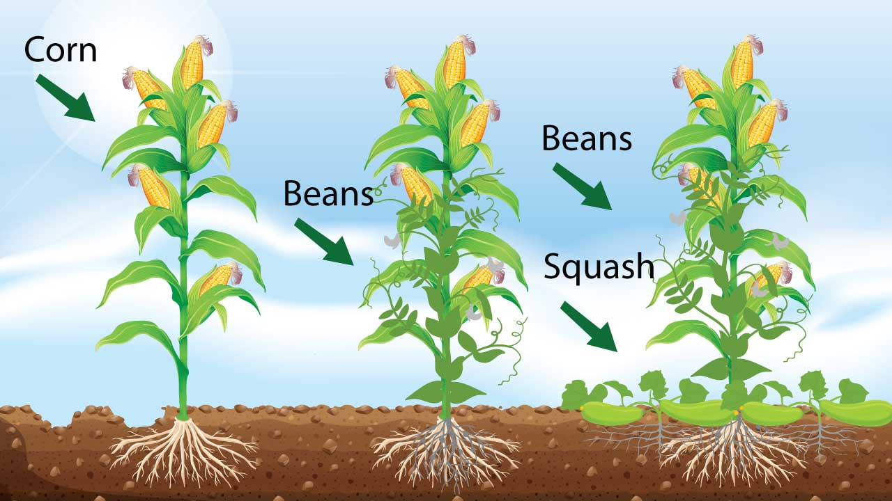
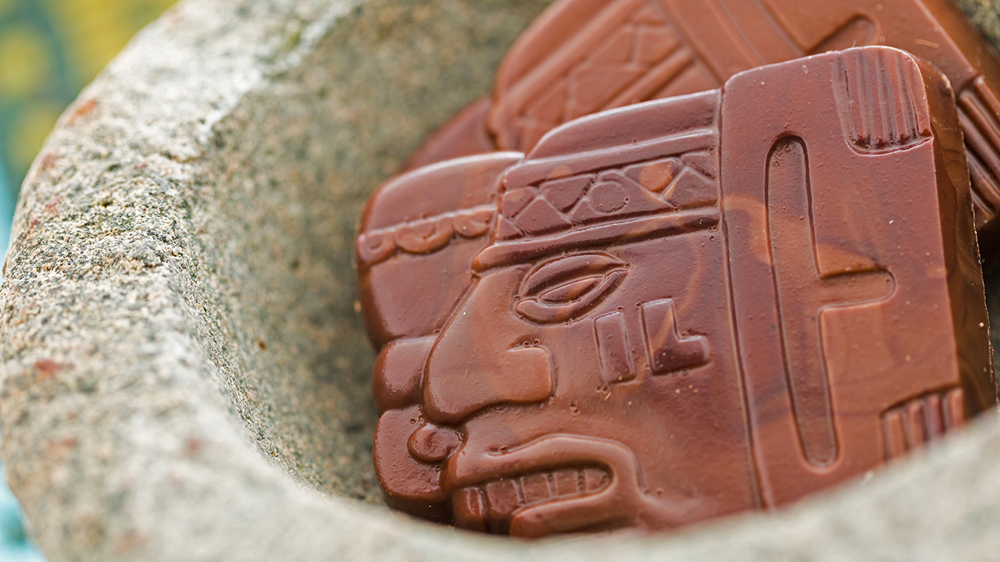

3 Sisters - The Magical Staple

The Three Sisters Planting Method is an ancient practice dating back to almost three hundred years ago. Native American tribes such as the Iroquois and Cherokee grew Three Sister Gardens as it allowed them to successfully grow 3 crops in the area of one. The Three Sisters Planting Method is an equally important gardening concept today as it was all those years ago as it provides long-term soil fertility whilst maximising growing space. It is a form of sustainable gardening as increases biodiversity, attracts pollinators and enhances soil fertility rather than removing it.
The plants that make up the trinity and corn/grains, for height, beans/legumes, for nitrogen fixation and squashes, for retaining the moisture in the soil. The corn should be a tall variety so that it gives the beans somewhere to climb. More compact varieties are usually grown here but look for the taller varieties otherwise you may find the beans overcrowd the corn. Taller varieties stand tall which ensures successful wind pollination. Beans must be pole or climbing varieties rather than bush beans. Non-vigorous and bushy-pole are best as they don't smother the corn plants. This is important because if the beans grow too vigorously, they can pull corn stalks over. Beans that do work very well includes Climbing French Beans, Lima, Runner Beans and Borlotti Beans. If you are fortunate enough to have limitless space (lucky you) then winter squashes will work otherwise stick to summer squashes which are a little more contained. Squashes can be substituted with watermelons, gourds or courgettes although it may be wise to steer clear from pumpkins as these can grow too vigorously and can be too heavy for the other crops to cope with.
Some gardeners believe introducing an additional sister can have a beneficial impact. Adding a flowering plant can encourage pollinators, deter pests or used as culinary herbs. Suitable herbs include rosemary, thyme and chives.Flowering plants can also be used as a sacrificial plant for snail and slugs to eat instead of your vegetables. Quite often this alone isn't enough and additional organic pest control solutions have to be introduced.
This planting method additionally produces plants that are nutritionally complementary. Mixing grains and legumes caters to the complete amino acid needs of a human being and this mix is famous the world over with different cultures having their own versions like noodles with soy tofu in the far east and fava beans with flat bread in the middle east.
Theo Broma - The Journey of Chocolate

The history of chocolate begins in Mesoamerica (now Central America and Mexico), where it's believed the ancient Olmec civilisation first cultivated cacao beans, as early as 1750 BC.
The Olmecs used the cacao plant for religious rituals and medicinal purposes, but the first evidence of cocoa as a drink comes from the Mayan people. Mayan chocolate was very different than the chocolate we know today. It was a liquid made from crushed cocoa beans, chilli peppers, and water. (There was no sugar in Central America.) They poured the liquid from one cup to another until a frothy foam appeared on top. In fact, the word 'chocolate' is said to come from the Mayan word 'xocolatl' which means 'bitter water.'
The Mayans called this bitter drink the “food of the gods.” Cocoa was so revered that images of cocoa pods were painted on the walls of stone temples and Mayan artefacts have been found that show kings and Mayan gods drinking chocolate. Cocoa was often consumed during religious ceremonies, and was used in marriage ceremonies for the upper classes.
How to make Mayan chocolate (Xocolatl):
1. Remove beans from cocoa pods.
2. Ferment and dry them.
3. Roast them on a griddle until done.
4. Remove the shells and grind the seeds into a fine paste.
5. Mix paste with water, chili peppers, and cornmeal.
6. Pour the resulting concoction back and forth from pot to cup until frothy foam develops on top.
7. Serve with pride in finely decorated earthenware cups.
Cocoa was highly valued for its healing and medicinal properties, and the demand for the cocoa bean and the beverage that it produced brought about a huge network of trade routes throughout the region.
When the Aztecs conquered huge swathes of Mesoamerica, the Mayans were forced to pay taxes to the Aztecs. These taxes were called 'tributes', and were in the form of cocoa beans, as the Aztecs were unable to grow their own.
According to legend, Quetzacoatl (ket za koh AH tul), the Aztec God of Vegetation, came to earth with a cocoa tree and taught the mortals how to cultivate cocoa and make a drink out of its beans. This made the other gods furious, and they threw him out of paradise for sharing the sacred drink with humans.
Cacao beans became a prized form of currency, used for food, clothes, taxes, gifts and offerings.
Cacao in Europe
After the Spanish conquest of the Aztecs, chocolate came to Europe. Initially, chocolate was still a bitter drink, used mainly for medicinal purposes and with the spices added. Once the addition of sugar and honey was added, it became incredibly popular across Europe. In 1847, chocolate became mouldable, and the modern chocolate bar was born.